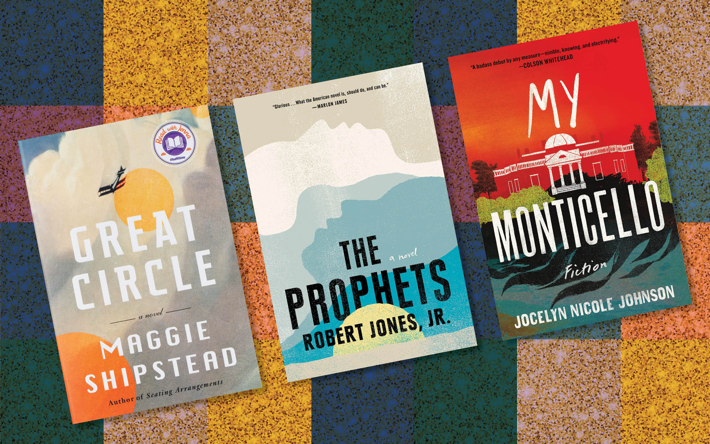
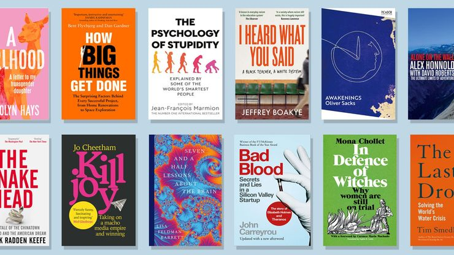
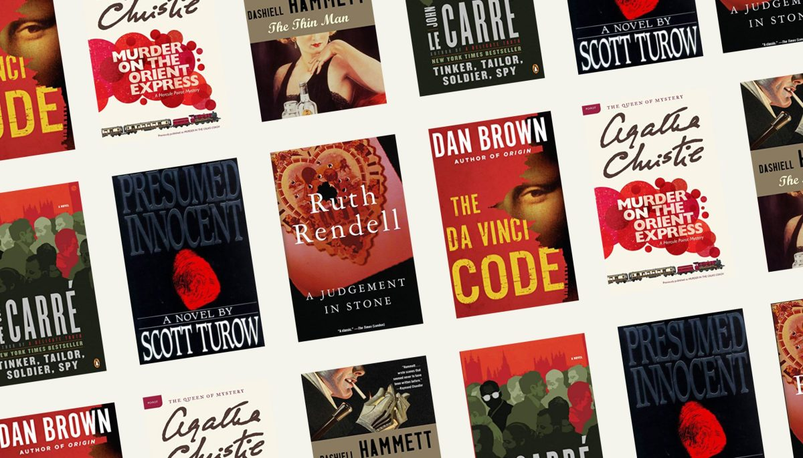
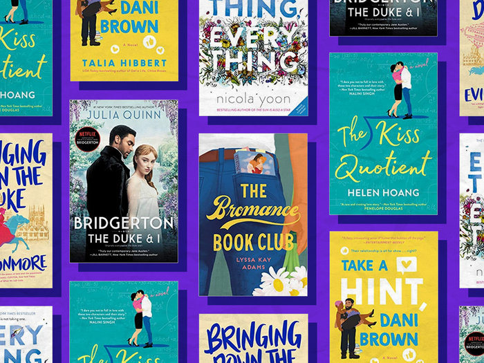
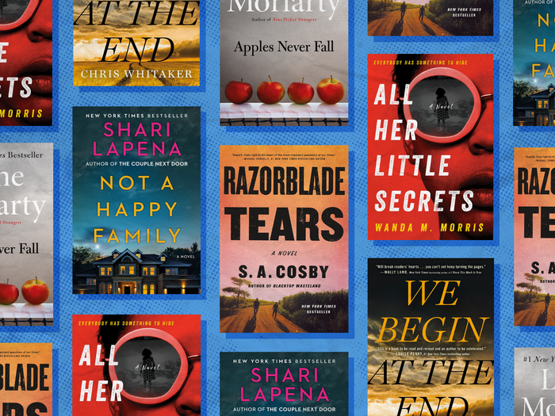
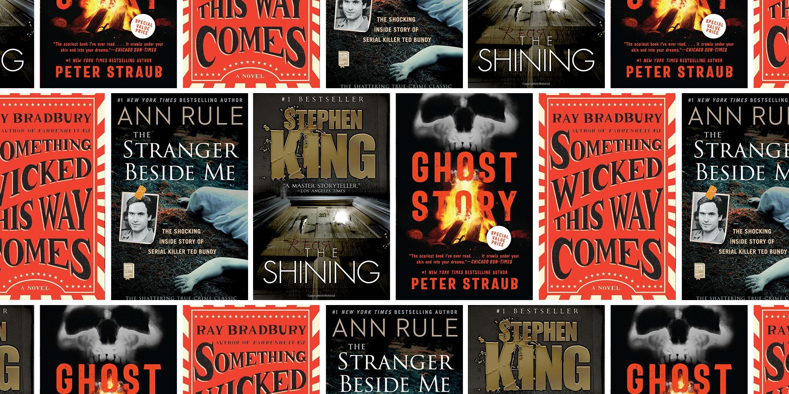

BOOKS
Introduction
Books are written or printed works consisting of pages bound together, typically with a cover. They serve as a medium for conveying information, stories, ideas, and knowledge. Books can be made of paper or available in digital formats, such as e-books. They are a fundamental part of human culture and have been used for centuries to preserve and transmit information. Books come in various genres, as mentioned earlier, and can be fictional or non-fictional. They provide a means of entertainment, education, inspiration, and exploration. Whether it's getting lost in a captivating story, delving into historical events, expanding knowledge on a specific subject, or finding solace in the words of a poet, books offer a rich and immersive experience.
Types of books
* Fiction * Non-fiction * Mystery * Romance * Thriller * Horror
Fiction
Fiction books are literary works that are primarily based on the author's imagination rather than real events or facts. They are created through the writer's creativity and storytelling abilities, allowing readers to engage with characters, settings, and narratives that are not grounded in reality.
Fiction books encompass a wide range of genres and sub-genres, catering to various interests and preferences.
Non-fiction
Non-fiction books are literary works that present information, facts, or real events rather than being products of the author's imagination. These books aim to provide knowledge, insights, and understanding of various subjects, often based on research, personal experiences, or expertise in a particular field. Nonfiction books cover a wide range of topics and can be educational, informative, or exploratory in nature.
Mystery
Mystery books are a genre of fiction that revolves around the investigation and solving of a puzzling or crime-related situation. These books typically engage readers by presenting an enigmatic event or a crime that needs to be unraveled. The protagonist, often a detective or an amateur sleuth, works to piece together clues, identify suspects, and ultimately uncover the truth.
Romance
Romance books are a genre of fiction that focus on the development of a romantic relationship between two or more characters. These books explore the complexities of love, emotions, and interpersonal connections. Romance novels typically emphasize the romantic journey, emotional bonds, and the challenges that the characters face in their pursuit of love and happiness.
Thriller
Thriller books are a genre of fiction known for their intense and suspenseful narratives. These books are designed to keep readers on the edge of their seats, filled with tension, excitement, and unexpected twists. Thrillers often involve high stakes, danger, and the constant anticipation of what might happen next.
Horror
Horror books are a captivating and chilling genre of fiction that aims to elicit fear, terror, and unease in readers. These books immerse readers in a world of darkness, suspense, and the macabre, exploring the depths of human fears and the supernatural. Horror books employ various elements to create an atmosphere of terror and suspense. They often feature eerie settings like haunted houses, isolated forests, or abandoned places, setting the stage for the horrifying events that unfold. These stories can involve supernatural creatures such as ghosts, monsters, vampires, or demons, introducing a sense of otherworldly terror. Alternatively, horror books may delve into psychological fears, exploring the human mind's darkest corners and the inner demons that haunt us.
Conclusion
In conclusion, books are diverse and captivating forms of literature that offer a wealth of knowledge, entertainment, and inspiration. Whether they belong to the realm of fiction or nonfiction, books serve as portals to different worlds, perspectives, and ideas. They provide an avenue for storytelling, learning, and personal growth.